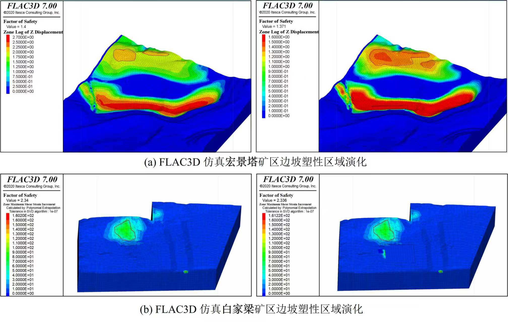

HFUT-OP360
面向无人机真实场景的空间智能统一数据集：点云去噪 / 图像-点云配准 / 边坡形变预测与预警 / 视觉-语言导航（VLN）/ 3D空间语义地图
动态
- TODO（2024-12-25）：发布 HFUT-OP360 v1.0
- TODO（2025-03-10）：开放评测脚本与基线结果。
摘要
HFUT-OP360 多模态边坡巡检数据集简介
HFUT-OP360 是申请人团队面向露天矿及典型高陡边坡巡检场景，自主构建的大规模多模态三维空间语义数据集，旨在支撑复杂地理环境下的空间感知、语义理解与风险决策研究。
与现有国际多模态数据集主要面向城市交通、自动驾驶或室内规则环境不同，HFUT-OP360 聚焦高陡、非规则、强工程约束的自然边坡与露天矿场景，具有地形起伏剧烈、结构破碎、遮挡严重、纹理弱且目标尺度差异显著等典型特征，更贴近地理空间智能中“复杂自然场景”的核心挑战。同时，数据集突破单时相静态感知范式，显式引入多时相形变序列与工程语义标注，支持在统一空间语义框架下开展三维建模、形变演化分析、风险评估与巡检决策等连续研究任务。
从空间智能视角看，HFUT-OP360 不仅提供多模态观测数据，更通过工程结构单元与巡检对象的语义标注，构建了可用于任务语言解析、三维语义指代与风险决策闭环的基础数据条件，弥补了现有数据资源在高风险边坡巡检与空间智能决策场景中的显著不足。
数据概览
HFUT-OP360现已构建覆盖多时段（白天、夜晚、黄昏）、多气象条件（雾、雨、雪）及季节变化的仿真数据，用于三维空间语义理解与指代等算法验证与评估，保障研究连续推进。
Part-1：无人机 LiDAR 点云去噪数据集
任务定义
给定含噪点云 P_noisy，目标是恢复参考点集 P_clean（或预测点级偏移/噪声掩码），
在抑制离群噪声的同时尽可能保留边坡折线、台阶（bench）、断裂线等关键几何结构。
核心特点
- 高密度 & 可复现：复杂地形大规模点云，统一采集与处理流程，便于复现实验。
- 参考真值：基于“最小改动原则”构建高保真参考点集，避免过度平滑造成几何失真。
- 可比性：噪声协议可与公开数据集对齐，方便跨数据集验证。
- 多源协同：同步倾斜影像用于几何与语义交叉验证（可选）。
数据采集
- 平台：DJI Matrice 300 RTK 无人机 + Zenmuse L1 LiDAR。
- 场景：两个代表性区域（PC_01、PC_02），覆盖陡坡、台阶与平坦区。
处理流程
标注采用“两阶段”策略：自动过滤 + 人工精修（重点处理边坡边缘、折线等歧义区域），并遵循最小改动原则。
噪声注入协议
采用 GPU 加速实现（如 PyTorch3D），并建议固定随机种子保证可复现：
- 各向同性高斯噪声：按包围盒对角线比例注入：1%、2%、3%、5%、10%。
- 模拟 LiDAR 噪声：距离相关方差、扫描线抖动、回波丢失等。
实验结果展示


Part-2：图像-点云配准（I2P）数据集
任务定义
本部分用于评测无人机采集的 RGB 图像与 LiDAR 点云之间的跨模态对齐能力。
给定图像 I 与点云 P，目标是估计精确的外参/位姿 T，实现像素-点对应与跨模态融合。
数据与标注内容
- RGB 图像（或关键帧）与 LiDAR 点云帧。
- 标定信息：相机内参
K、畸变（可选）、外参/位姿真值T_gt。 - 配对/序列：时间同步帧对或短序列，支持鲁棒匹配与初始化策略。
- TODO：说明是否提供初始估计
T_init、时间戳、同步策略与误差范围。
评测指标
- RRE（旋转误差）、RTE（平移误差）
实验结果展示

Part-3：边坡形变预测与预警
任务定义
围绕 GB-SAR 等面域监测数据的时空建模，申请人提出 MSPredictor 形变预测模型，实现复杂边坡形变演化的高效预测与可解释分析；进一步提出融合速度倒数曲线与加速起始点等物理先验的 PIKANs 模型，用于失稳时间预测与动态阈值设定，并在露天矿边坡预警案例中得到验证。上述成果可直接迁移至本项目语义区域形变预测、风险评估与分级预警闭环构建，为区域级决策提供成熟模型与物理约束。
形变预测与机理分析
通过对GB-SAR 地表位移监测数据的系统分析，发现不同类型边坡的形变演化机理： A. 白家梁“水-岩相互作用型”边坡：建议优先构建横向监测网络与水文传感观测体系。关注“孔隙水压力、渗流量”等监测。 B. 宏景塔“重力-卸荷联合作用型”边坡：应加强对垂向轴线的监测，如加密点 1-3-4、点 2-5 的位移和应变传感器。优化开采时序，严格控制单次开挖深度，避免应力集中在短时间内骤增。关注应力演化。风险评估与分级预警
针对试点露天煤矿（如：白家梁和宏景塔），为评估滑坡造成的影响范围，根据重建的高精度三维模型，在 FLAC3D 中对边坡 DEM 模型进行仿真验证。
Part-4：无人机视觉语言导航（VLN）数据集
任务定义
智能体在无人机视角下，根据自然语言指令完成目标导航。 每个 episode 通常包含视觉观测（RGB/视频/关键帧）、指令文本（目标描述）、以及真值轨迹或目标判定规则。
数据内容
- 指令：
instruction.jsonl（文本、目标、难度标签等） - 轨迹：航点序列
(x,y,z,yaw)或动作序列 - 视觉观测：关键帧/视频帧 + 时间戳
- 目标定义：成功区域 / 成功判定规则
- （可选）粗地图 / 语义提示
标准指标
- SR（成功率）
- SPL（按路径长度加权的成功率）
- （可选）nDTW / SDTW（轨迹相似度）
TODO：建议明确是否采用 seen/unseen 划分，以及成功判定（半径/区域/是否需要 stop 动作）。
基准设置与基线方法
HFUT-OP360 建议通过统一的划分、预处理与评测脚本，进行公平对比。 推荐同时报告整体指标与分场景/分难度统计，以更准确衡量方法的泛化能力。
建议基线
- Part-1 去噪：统计滤波/MLS 等传统方法 + 学习方法（例如 Score-based 去噪）。
- Part-2 配准：PnP/ICP 变体 + 学习式 I2P 方法（特征匹配/对应点）。
- Part-3 VLN：行为克隆/模仿学习基线 +（可选）VLM 规划基线。
下载与使用说明
数据集、标注与评测工具面向学术研究开放。使用时请遵循许可协议，并在论文/报告中引用 HFUT-OP360。
百度网盘：https://pan.baidu.com/s/1ulL5jYk-NZJbbRXVMxxu6A
提取码：78fd
内容包含：*.xyz、*_clean.xyz、离群点训练/测试集（*.hdf5）、预训练权重（*.pth）。
TODO：提供下载链接，并包含 K.txt、T_gt.txt、帧对列表、时间戳等。
TODO：提供下载链接，并包含 instruction.jsonl、trajectory.json、视频/帧、goal 定义等。
目录结构（示例）
HFUT-OP360/
Part1_Denoise/
PC_01/
sample_000001/
noisy.xyz
clean.xyz
Part2_Registration/
seq_0001/
cam/000001.png
lidar/000001.txt
calib/K.txt
calib/T_gt.txt
pairs.txt
Part3_VLN/
scene_0001/
traj_000001/
rgb/
trajectory.json
instruction.jsonl
goal.json
复现建议：噪声注入建议固定随机种子；评测建议使用官方脚本（TODO 链接），并记录预处理细节与阈值设置。
引用方式
如果你在研究中使用 HFUT-OP360，请引用数据集论文与相关基线：
@article{wan2025mspredictor,
title={MSPredictor: A Multi-Scale Dynamic Graph Neural Network for Multivariate Time Series Prediction},
author={Wan, Jiashan and Xia, Na and Li, Gongwen and Li, Jingyang and Wu, Jinhua and Pan, Xulei and Lian, Mengqi},
journal={IEEE Transactions on Emerging Topics in Computational Intelligence},
volume = {9},
number = {6},
pages = {4243-4257},
year={2025},
publisher={IEEE}
}
@article{wan2025pikans,
title={PIKANs: Physics-informed Kolmogorov--Arnold networks for landslide time-to-failure prediction},
author={Wan, Jiashan and Wen, Liangjun and Jian, Ziheng and Wu, Jinhua and Li, Jingyang and Lian, Mengqi and Wang, Kai},
journal={Computers \& Geosciences},
pages={106094},
year={2025},
publisher={Elsevier}
}
@article{wan2024tcdformer,
title={TCDformer: A transformer framework for non-stationary time series forecasting based on trend and change-point detection},
author={Wan, Jiashan and Xia, Na and Yin, Yutao and Pan, Xulei and Hu, Jin and Yi, Jun},
journal={Neural Networks},
volume={173},
pages={106196},
year={2024},
publisher={Elsevier}
}
@article{wan2025damixer,
title={DAMixer: A dual-stage attention-based mixer model for multivariate time series forecasting},
author={Wan, Jiashan and Xia, Na and Cai, Bing and Li, Gongwen and Wei, Sizhou and Pan, Xulei},
journal={Expert Systems with Applications},
volume={274},
pages={127030},
year={2025},
publisher={Elsevier}
}
许可协议
TODO
联系方式
维护者：wangkai | 邮箱：wangkai_anhui@qq.com | 单位：HFUT